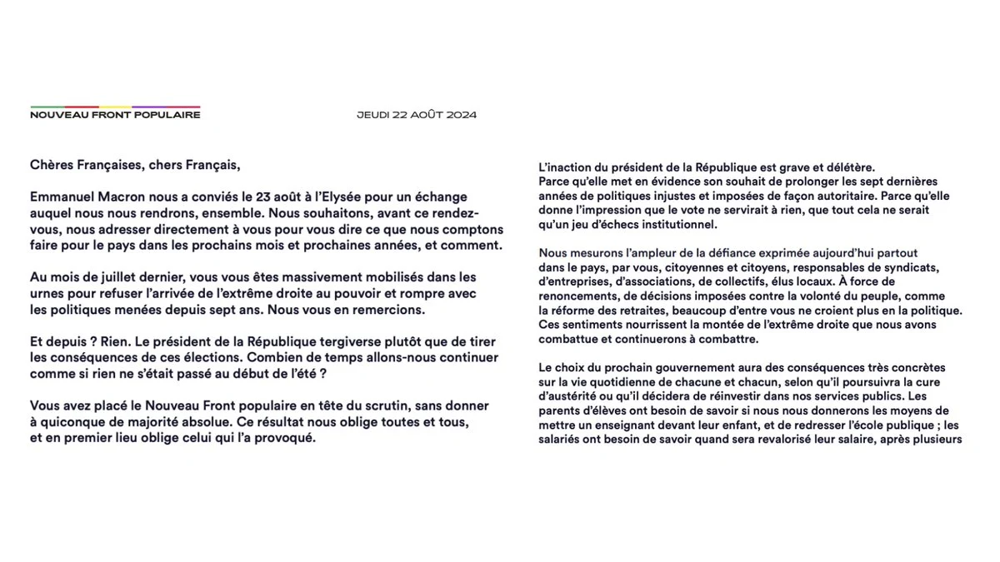
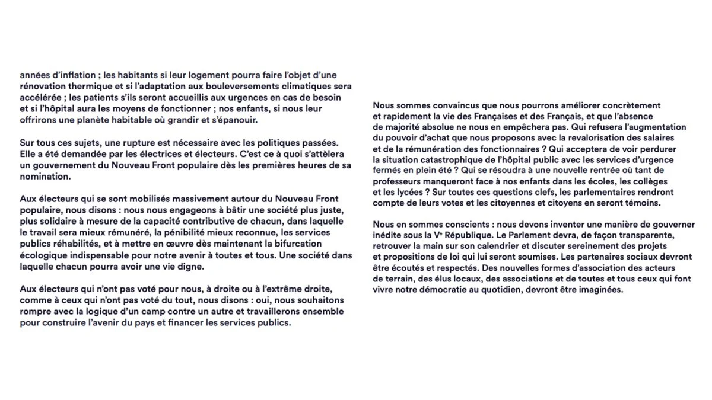
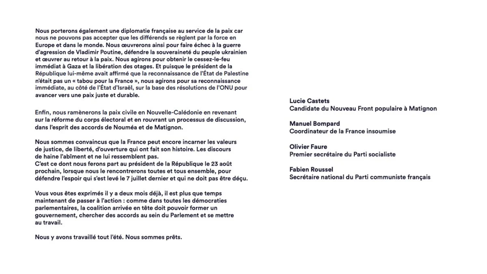

Publication sur X
« Nous sommes prêts ». La lettre aux Françaises et aux Français
Date de publication sur X · 23 août 2024
Repères éditoriaux
Nous avons relayé la lettre de Lucie Castets et des responsables du Nouveau Front populaire. Les quatre images conservent ses pages et signatures dans leur ordre.
Texte de la publication sur X
"Nous sommes prêts"
Lettre aux Français de @CastetsLucie, @Fabien_Roussel, @marinetondelier, @faureolivier et @mbompard https://t.co/GWX2nSOTbB



Sources
PCF 79 · @79Parti sur X · AR-0005-TW-1826883728506827261
À lire aussi · Sénatoriales 2026. Le PCF 79 présente Frédéric Giraud et Valérie Mazé
Publications associées
- « Nous sommes prêts ». La lettre aux Françaises et aux Français du Nouveau Front populaire · Même lettre relayée sur Facebook